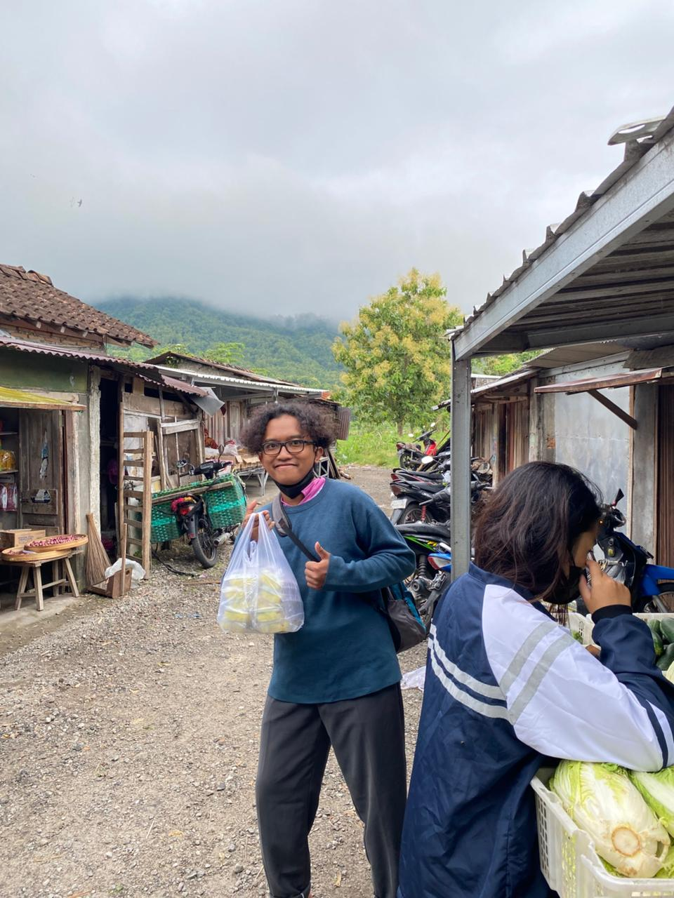

Incinerator
Dokumentasi.
Pengelolaan
Panduan pemilahan sampah dan aspek keamanan incinerator.
Kolaborasi
Program KKN sebagai.

Tim KKN Desa Mutihan
Program Sosial & Teknologi Lingkungan
Kami adalah Tim KKN lintas disiplin yang berfokus pada pengelolaan sampah dan edukasi lingkungan masyarakat Desa Mutihan. Salah satu program utama kami adalah pengembangan e-Katalog Incinerator Sederhana sebagai media informasi, edukasi, dan panduan teknis yang mudah diakses oleh masyarakat.
Tujuan Program
- Edukasi pengelolaan sampah berbasis teknologi sederhana
- Pengenalan incinerator skala rumah tangga dan desa
- Media digital yang mudah diakses dan gratis
Rencana Anggaran Biaya (RAB)
Rencana anggaran biaya pembuatan incinerator sederhana skala kecil sebagai sarana edukasi dan pengelolaan sampah residu.
| No | Nama Barang | Spesifikasi | Jumlah | Harga Satuan (Rp) | Total (Rp) |
|---|---|---|---|---|---|
| 1 | Drum Besi | Kapasitas ±200 liter | 1 | 350.000 | 350.000 |
| 2 | Batu Bata Tahan Panas | Material ruang bakar | 50 | 3.000 | 150.000 |
| 3 | Pipa Besi Cerobong | Diameter 4 inch | 1 | 120.000 | 120.000 |
| 4 | Kawat Besi | Penguat struktur | 2 kg | 25.000 | 50.000 |
| 5 | Semen & Pasir | Perekat dan pondasi | 1 set | 100.000 | 100.000 |
| 6 | Alat Pelindung Diri (APD) | Sarung tangan, masker | 1 set | 75.000 | 75.000 |
| Total Biaya | 845.000 | ||||
*Biaya bersifat estimasi dan dapat menyesuaikan dengan harga material di lokasi pelaksanaan KKN.
Dokumentasi Kegiatan
Dokumentasi kegiatan pembuatan dan sosialisasi incinerator sederhana selama pelaksanaan KKN.
Video Dokumentasi Incinerator
Dokumentasi pembuatan, penggunaan, dan edukasi pengelolaan sampah menggunakan incinerator sederhana
Proses Pembuatan
Cara Penggunaan
Edukasi Pemilahan Sampah
Panduan Penggunaan Incinerator
Langkah Pengoperasian
- Pastikan incinerator dalam kondisi aman dan kering
- Pilah sampah sesuai kategori yang diperbolehkan
- Masukkan sampah secara bertahap
- Nyalakan api dan pantau proses pembakaran
- Biarkan abu dingin sebelum dibersihkan
Catatan Keamanan
- Gunakan sarung tangan dan masker
- Jangan membakar sampah berbahaya
- Pastikan lokasi jauh dari pemukiman
Pemilahan Sampah
Sampah yang Boleh Dibakar
- Daun kering
- Kertas dan kardus
- Kayu kecil tanpa cat
Sampah yang Tidak Boleh Dibakar
- Plastik dan styrofoam
- Karet dan ban
- Baterai dan limbah elektronik
- Sampah medis